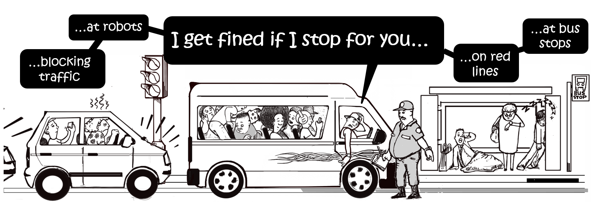
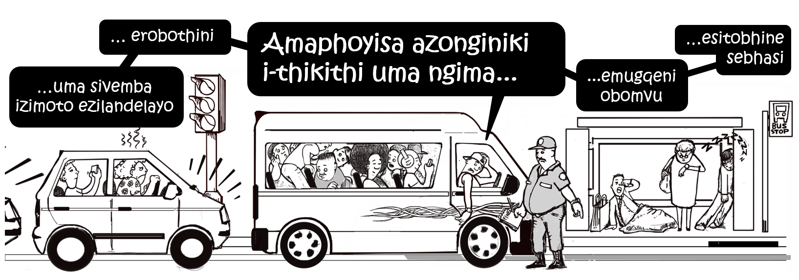

While putting together the story of Nowhere To Stop, we wondered how to take it further. What could we leave with the drivers to make their lives a little easier?
Our interviews all confirmed that an important part of the story is the passenger’s expectations of being picked up and dropped off wherever they desire. This culture of taxis stopping literally everywhere has a long tradition, and marks one of the advantages compared to the less flexible buses. A crucial step would be to make passengers more aware of this problem. We decided to take this as a point of leverage.
Together with Durban based cartoonist Daniel Sheldon we designed a sticker that can be put up on the upper metal frame in the combis. The idea was to communicate in a humoristic way that passengers are getting the driver into trouble by making him stop in certain places. Daniel did a great job with the cartoon, and we added the text for an English and isiZulu version.

Nowhere To Stop cartoon in english

Nowhere To Stop cartoon in isiZulu
The next step for us is to consult with taxi drivers and members of Durban’s taxi associations in order to adapt the design and text to their needs. We will then print a number of pilot stickers and distribute them to drivers and taxi owners, and assess how they are perceived. Our hope is that the stickers can be produced on a larger scale and help to create awareness within the taxi industry and from the commuters.